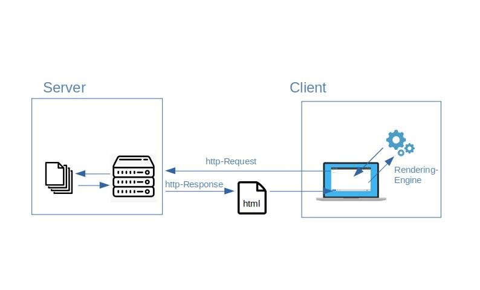
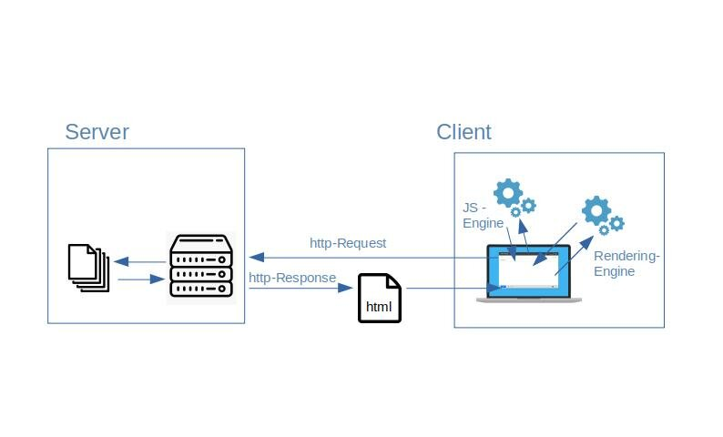
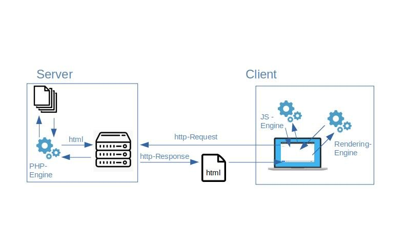
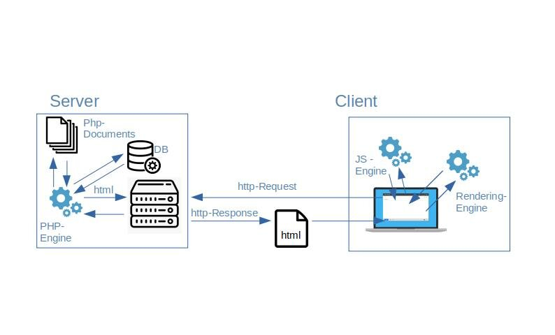
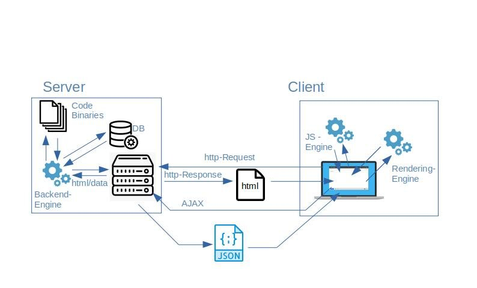

Lektion 4.1 — Teil 4: Webanwendungen mit Vaadin
Grundprinzipien des Web
Lernziele
- den Ablauf von HTTP-Request und -Response bei statischen Webseiten beschreibenAbschnitt 1
- die Rolle von JavaScript im Browser und von serverseitigen Skripten unterscheidenAbschnitt 2
- erklären, was eine Single Page Application ist und wie AJAX, JSON und REST zusammenspielenAbschnitt 3
- Bibliothek und Framework unterscheiden und Inversion of Control bzw. Dependency Injection grob erklärenAbschnitt 4
- Backend- und Frontend-Frameworks einordnen und die Idee von Vaadin Flow beschreibenAbschnitt 4
1 — Statische Webseiten
Technische Grundlage moderner Webanwendungen ist die einfache statische Webseite: ein reines Textdokument mit
html-Code. Über einen HTTP-Request wird ein solches Dokument über eine URL
angefordert. Der Webserver prüft, ob im Dokumentenverzeichnis ein entsprechendes Dokument vorhanden ist, und
schickt es mit der HTTP-Response an den Client (z. B. einen Webbrowser auf einem Notebook)
zurück. Der Browser interpretiert das HTML-Dokument: Tags und Inhalte werden gerendert und als
formatiertes Dokument dargestellt.

Solche Seiten sind rein statisch – keinerlei Interaktion ist möglich. Jede Form von nicht-statischem Inhalt (Benutzereingaben verarbeiten, Animationen …) erfordert die Ausführung eines Programms, und zwar im Webbrowser. Dafür hat sich JavaScript als vorherrschende Sprache etabliert. Sie wird interpretiert: Die JavaScript-Engine des Browsers liest den Code ein und arbeitet ihn Zeile für Zeile ab.

Eine typische Anwendung sind Änderungen im DOM (Document Object Model): Über den DOM lassen sich alle Elemente (Eingabefelder, Textbereiche, Tags, Buttons) mit JavaScript ansprechen – Werte berechnen und anzeigen, Zeilen zu Tabellen hinzufügen u. v. m. Bibliotheken wie jQuery vereinfachen u. a. den Zugriff auf den DOM und die Ereignisbehandlung; in den letzten Jahren hat jQuery aber an Bedeutung verloren.
2 — Serverseitige Programme und Datenbanken
Bei Webanwendungen genügen statische Seiten am Server nicht – HTML-Seiten müssen auch serverseitig dynamisch aufgebaut werden. Früher wurde dafür oft PHP verwendet (auch heute noch), es gibt aber zahlreiche Alternativen. Der HTTP-Request enthält den Namen eines Skripts (Programms). Es wird nicht an den Client geschickt, sondern zuerst ausgeführt; seine Ausgabe ist üblicherweise eine HTML-Seite (mit enthaltenem JavaScript), die an den Client zurückgeht.

Wesentliche Motivation ist oft der Zugriff auf Datenbanken: Er kann nicht direkt von einer HTML-Seite aus erfolgen, es braucht ein ausführbares Programm. Früher wurde das Ergebnis einer Datenbankabfrage oft direkt im Skript in eine HTML-Tabelle eingetragen.

Mit diesen Techniken lassen sich grundsätzlich beliebige Webanwendungen bauen. Jede Interaktion mit neuen Daten erfordert aber das komplette Neuladen der Seite; bei langsamer Verbindung blitzt kurz eine weiße Seite zwischen vorheriger und nächster Seite auf. Dieser „Flickering-Effekt“ prägt das typische Look and Feel der 2000er-Jahre und wird manchmal als störend empfunden.
3 — Single Page Applications, JSON und REST
Moderne Webanwendungen sind meist Single Page Applications (SPA). Nach einer Benutzerinteraktion laden sie nur die Daten vom Server, nicht Layout und Struktur der Seite. Das geschieht mit AJAX, einem asynchronen JavaScript-Aufruf: Der Client setzt ihn ab, ohne dass sein Programmfluss unterbrochen wird. Sobald der Server die Daten liefert, übernimmt eine JavaScript-Funktion sie und fügt sie in die bestehende Seite ein.
Das Format für den Datentransfer ist meist JSON – eine einfache Variante, Objektdaten rein textuell zu serialisieren (vgl. Lektion 3.3).

{
"id": 1001,
"firstName": "Donald",
"lastName": "Knuth",
"role": "DEVELOPER",
"salary": 12000,
"subcontractor": false
}Als Schnittstellen zum Abrufen von Daten haben sich REST-Schnittstellen etabliert (Representational State Transfer). REST ist im Wesentlichen zustandslos: Jede Anfrage ist unabhängig von vorangegangenen Anfragen – optimale Voraussetzungen dafür, dass viele Clients mit einem Backend am Server kommunizieren.
Webanwendungen sind also komplexer als Desktop-Anwendungen: wegen der expliziten Client-Server-Architektur und der vielen beteiligten Technologien – HTML, CSS, JavaScript, evtl. jQuery, Java (oder C#, Node.js, PHP …), REST, JSON, HTTP usw.
4 — Frameworks
Im Backend wie im Frontend gibt es viele immer wiederkehrende Aufgaben. Moderne Webanwendungen werden deshalb nahezu immer mit Frameworks erstellt. Im Gegensatz zu Klassenbibliotheken geben Frameworks viel von der Struktur der Programme vor:
Bibliothek
Dein Code erzeugt Objekte der Bibliotheksklassen und ruft ihre Methoden auf (z. B. ArrayList, Random). Du steuerst den Ablauf.
Framework
Du schreibst Klassen nach bestimmten Vorgaben; das Framework startet und verwendet sie zur Laufzeit. Das Framework steuert den Ablauf (Inversion of Control).
Im Backend hat sich im Java-Bereich Spring etabliert, im C#-Umfeld .NET. Beide unterstützen wesentliche Aspekte wie REST-Schnittstellen, Routing, Datenbankanbindung und Security, und beide folgen dem Inversion of Control-Prinzip: Klassen sollen nicht selbst für die Erzeugung ihrer Abhängigkeiten verantwortlich sein; diese werden ihnen (im Konstruktor) übergeben (Dependency Injection). Der Programmablauf wird nur teilweise explizit ausprogrammiert: Bestimmte Klassen werden automatisch gefunden und gemäß Konfiguration miteinander „verdrahtet“. So startet das Framework „automatisch“ einen Webserver; als Programmierer schreibt man spezielle Klassen mit einem hinterlegten URL-Pfad und Methoden zum Lesen und Ändern der Daten, und das Framework verwendet beim Aufruf der URL genau diese Klassen.
Im Java-Bereich gibt es Java EE (Enterprise Edition, heute Jakarta EE) als Alternative zu Spring, bei Python haben sich Flask und Django etabliert. Viele Prinzipien sind bei vielen Frameworks ähnlich.
Im Frontend haben sich Frameworks wie Angular, React oder Vue etabliert. Sie setzen auf JavaScript bzw. TypeScript (eine typisierte Variante von JavaScript) auf und befassen sich vor allem mit dem Binden der Daten an die Benutzeroberfläche (Template).
Diese Frameworks erleichtern den Entwickleralltag erheblich, die Lernkurve für moderne Single Page Applications ist aber relativ steil. Das in den folgenden Lektionen vorgestellte Vaadin Flow umgeht weite Teile dieser Komplexität: Webanwendungen entstehen nahezu ausschließlich mit Java-Objekten, der Client-Server-Aspekt wird für den Entwickler weitgehend transparent. Trotzdem sind in Vaadin-Anwendungen viele allgemeine Design-Prinzipien so umgesetzt, dass sie sich leicht auf andere Frameworks übertragen lassen.
Wer Webanwendungen mit HTML, CSS, JavaScript und React bauen will, findet dazu eigene Kurse: HTML & CSS, JavaScript und React (Web- und Mobile Computing).
Projektschritt
Die Weboberfläche planen
Bevor programmiert wird, planen wir die Seiten (Views) der Personalverwaltung im Browser. Jede View bekommt eine URL (Route); alle teilen sich einen Rahmen mit Menü. Die Daten kommen aus den Model-Klassen von Lektion 3.8 (Company.getInstance()).
| View | Route | Inhalt | Lektion |
|---|---|---|---|
MainLayout | – | Rahmen: Titelleiste, Menü mit Links zu allen Views | 4.2 |
AboutView | /, /about | Startseite mit Textfeld, Button, Benachrichtigung und Dialog | 4.2 |
CompanyView | /company | Formular für Firmenname und Adresse, Speichern/Laden als CSV | 4.3, 4.4, 4.5 |
EmployeesListView | /employees | Tabelle aller Mitarbeiter mit Bearbeiten/Löschen | 4.4, 4.5 |
EmployeeView | /employee, /employee/1002 | Formular für einen neuen bzw. bestehenden Mitarbeiter | 4.4, 4.5 |
Skizziere jede View auf Papier: Welche Eingabefelder (Text, Datum, Auswahl, Checkbox) braucht sie, welche Buttons, und welche Methode des Models wird beim Klick aufgerufen?
📁 Noch kein Code – das Vaadin-Projekt entsteht in Lektion 4.2.
Häufige Fehler
3 Fehler · zum Aufklappen klicken
„Der Browser führt unsere Java-Klassen aus.“
Im Browser läuft JavaScript. Java läuft am Server. Vaadin erzeugt aus den Java-Komponenten HTML/JavaScript für den Browser und kümmert sich um die Kommunikation – die Java-Logik bleibt am Server.
Ein REST-Aufruf soll sich „merken“, welche Seite der Benutzer zuvor geöffnet hat.
REST ist zustandslos: Jede Anfrage muss alle nötigen Informationen enthalten (z. B. die Id in der URL).
Man versucht, aus einer HTML-Seite heraus direkt auf die Datenbank zuzugreifen.
Datenbankzugriffe gehören in ein Programm am Server (Backend); der Browser bekommt nur die Ergebnisse.
Quiz
4 Fragen · zum Aufklappen klicken
Frage 1 Was passiert, wenn der Browser eine statische Webseite aufruft?
Frage 2 Was ist eine Single Page Application?
Frage 3 Was unterscheidet ein Framework von einer Bibliothek?
Frage 4 Was ist die Grundidee von Vaadin Flow?
Mehrere Antworten sind richtig.